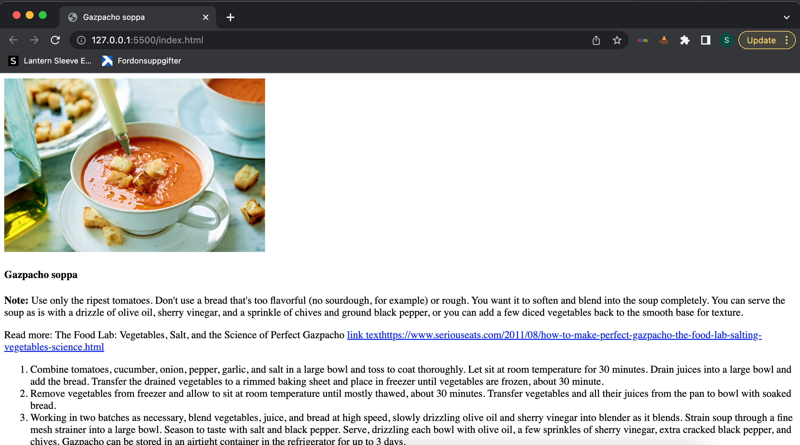
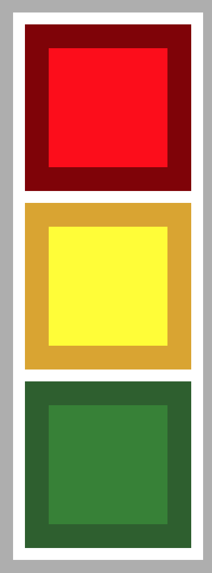
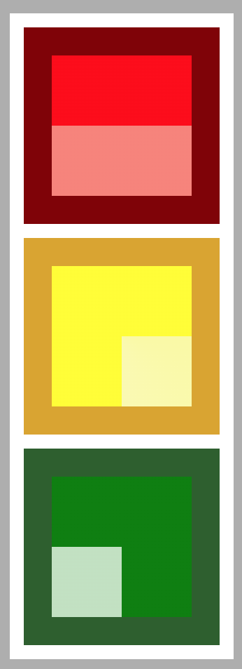
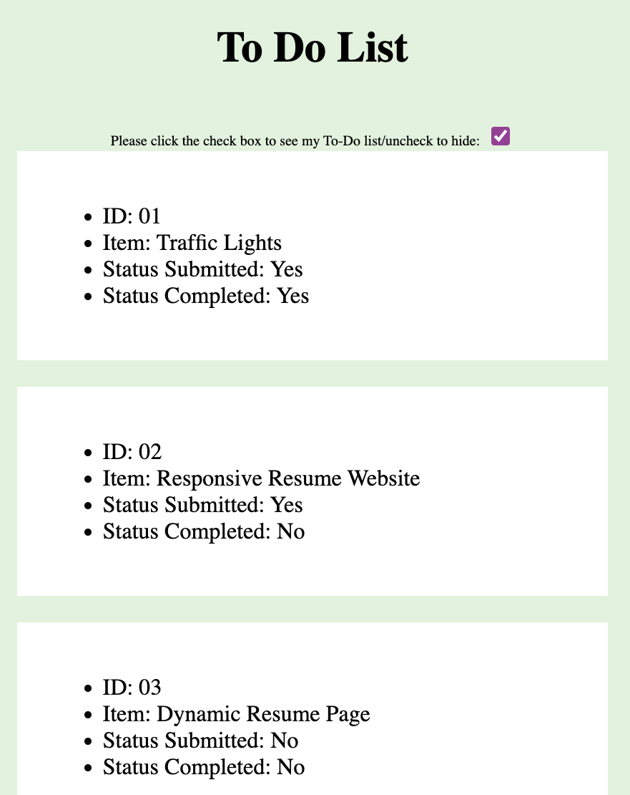

Project Showcase
My First Webpage: Gachpacho Soup Recipe
This is a project where I have learned to develop an HTML page for the first time. In this page, I have learned and practiced adding texts, images, links and list components in the page.
Codes are public and can be accessed and also the page can be viewed from following links:
- GitHub Repository: https://github.com/suhagan/My-First-Webpage--Gachpacho-Soup-Recipe
- GitHub Page: https://suhagan.github.io/My-First-Webpage--Gachpacho-Soup-Recipe/
Traffic Lights - 01: Solid Color
This is a project where I have learned to work with Cascade Style Sheet (CSS) while displaying traffic lights with solid color.
Codes are public and can be accessed and also the page can be viewed from following links:
- GitHub Repository: https://github.com/suhagan/Traffic-Lights-01-Solid-Color
- GitHub Page: https://suhagan.github.io/Traffic-Lights-01-Solid-Color/
Traffic Lights - 02: Shaded Color
This is another project where I have learned to work with Cascade Style Sheet (CSS) while displaying traffic lights with shaded color.
Codes are public and can be accessed and also the page can be viewed from following links:
- GitHub Repository: https://github.com/suhagan/Traffic-Lights-01-Solid-Color
- GitHub Page: https://suhagan.github.io/Traffic-Lights-01-Solid-Color/
My First Responsive Menu

In this project, I have learned to develop my first responsive menu. I have created the HTML first. Then designed it with CSS.
Codes are public and can be accessed and also the page can be viewed from following links:
- GitHub Repository: https://github.com/suhagan/My-First-Responsive-Menu
- GitHub Page: https://suhagan.github.io/My-First-Responsive-Menu/
Workshop: To-Do List
In this workshop, I have learned how to develop a to-do list and fetching information from JSON file using JS. An HTML page is developed desinged using a CSS file and operated by a functioning JS file. I have also learned how to use check box to show and hide information.
Codes are public and can be accessed and also the page can be viewed from following links:
- GitHub Repository: https://github.com/suhagan/My-To-Do-List
- GitHub Page: https://suhagan.github.io/My-To-Do-List/